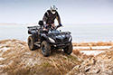
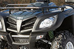
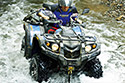
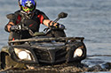
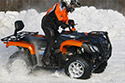

- 
- 
-

- 
- 
-

- 
Stels ATV 800 Guepard Touring
- Объем двигателя
- Мощность
- Гарантия STELS
- Гарантия СпортХит
Stels ATV 800 Guepard — Беспрецедентная премьера сезона, разработанная российскими конструкторами. Конструкция рамы обеспечивает Stels 800 удивительный по уровню комфорт и отличные ходовые качества. Длинный ход подвески способствует высокой проходимости. Двигатель придает уверенности на любом бездорожье.
- Максимальная мощность (л.с.): 67
- Максимальная скорость (км/ч): 120
- Тип двигателя: 4х-тактный, 2-циндровый, V-образный, жидкостного охлаждения
- Трансмиссия: клиноремённый вариатор (CVT) (L-H-N-R-P) с режимом работы 2WD/4WD/4WD Lock
- Сухая масса (кг): 360
- Габариты (см): 2280х1200х1560
- Тип двигателя: 4х-тактный, 2-циндровый, V-образный, жидкостного охлаждения
- Максимальная мощность (л.с.): 67
- Максимальная скорость (км/ч): 120
- Тип двигателя: 4х-тактный, 2-циндровый, V-образный, жидкостного охлаждения
- Трансмиссия: клиноремённый вариатор (CVT) (L-H-N-R-P) с режимом работы 2WD/4WD/4WD Lock
- Сухая масса (кг): 360
- Габариты (см): 2280х1200х1560
- Тип двигателя: 4х-тактный, 2-циндровый, V-образный, жидкостного охлаждения
ИСПЫТАЙ КВАДРОЦИКЛЫ STELS В ДЕЛЕ
Пройди бесплатный тест-драйв
и ощути на себе все преимущества
КВАДРОЦИКЛ БЕЗ ОГРАНИЧЕНИЙ
Покоряйте бездорожье, забудьте о времени года, используйте квадроцикл для увлечений, охотьтесь, рыбачьте, путешествуйте, ищите границы скорости, ловите адреналин и просто радуйтесь жизни
ЛУЧШЕЕ ИЗ ВОЗМОЖНОГО
МЫ РАБОТАЕМ УЖЕ БОЛЕЕ 10 ЛЕТ И ЗНАЕМ, ЧТО ВАЖНО ДЛЯ ПОКУПАТЕЛЯ
В подарок к каждому квадроциклу
НАБОР ЭКИПИРОВКИ
При покупке квадроцикла Вы получаете один или несколько аксессуаров в подарок!
До конца акции осталось
дней
часов
минут
Инструктаж
Наш эксперт поможет вам разобраться, как правильно пользоваться и ухаживать за техникой в разное время года:
- расскажет об особенностях работы основных систем квадроцикла
- даст советы по хранению, мойке, заправке и выбору масел и фильтров
- покажет основные приемы управления и торможения на различных участках дороги
- проконсультирует об особенностях постановки на учет и получения номеров
Доставка
- Бесплатная доставка в любую точку Москвы и области
После проведения предпродажной подготовки и полной диагностики техники, наша курьерская служба доставит выбранную технику на любой адрес Москвы и Московской области абсолютно бесплатно.
Просто назовите адрес и удобную для Вас дату доставки.
- Доставка по России
Мы работаем с большим количеством транспортных компаний, осуществляющих бережную перевозку крупногабаритных грузов.
Наш менеджер с удовольствием поможет вам выбрать наиболее подходящую службу доставки, при этом до транспортной компании мы доставим бесплатно транспортной компании более чем в 60 городов.
Доставка осуществляется собственными курьерами, но при необходимости вы можете воспользоваться услугами стороннего перевозчика.
Свяжитесь с нами для получения информации о стоимости доставки:
- 8 (495) 374-74-70
8 (800) 555-97-83
Оплата товара
Мы очень гибко подходим к работе с нашими покупателями и не ставим границ в выборе способов оплаты. Также для нас не важно, покупку осуществляет физическое лицо, или вы являетесь представителем юридического лица.
Вы можете оплатить товар удобным для вас способом:
- Наличный расчет
- Безналичный расчет: наложенный платеж или банковский перевод на наш расчетный счет
- Денежные переводы (Web-money и т.д.)
- Оплата картой при получении (при доставке нашим транспортом)
Как нас найти
Москва, Сколковское ш., д. 31с1
Торговый Центр «СпортХит»,1 этаж,
(дальний вход, направо, до вывески «Официальный дилер Stels»)
График работы:
с 10:00 до 21:00 (без выходных)
Вы можете разместить заказ, не выходя из дома, по номерам:
8 (495) 374-74-70
8 (800) 555-97-83
FAQ
-
Как выбрать себе квадроцикл?
Квадроцикл — прекрасное решение для загородного отдыха, работы на участке, рыбалки, охоты. Поэтому если Вы решили покупать квадроцикл, наверняка возникал вопрос — А какой выбрать?
Рынок квадроциклов сейчас разнообразен. Они различаются по назначению, стоимости, производителю, мощности двигателя.
Давайте же разберемся, какой лучше выбрать?
По типу различается одноместный и двухместный.
Одноместный вариант имеет более высокую проходимость, поэтому чаще всего их выбирают спортсмены. А вот безопасная езда для двух пассажиров обеспечена на двухместном.
По моделям квадроциклы делят на 3 больших класса:
Спортивные — разрабатываются для гонок. Имеют привод на два колеса, надежную независимую подвеску, легкий кузов и мощный двигатель. Оснащены защитой гонщика от возможных травм.
Туристические — рассчитаны на езду по бездорожью, хорошо приспособлены к спускам и подъемам, так как оснащены полным приводом. В большинстве случаев их используют для поездок на дальние расстояния, поэтому они имеют хорошую и комфортную подвеску, защиту днища и комфортные сиденья.
Утилитарные — в основном приспособлены для загородного отдыха и работы на хозяйстве. Основная особенность утилитарных квадроциклов — универсальность и возможность подстроиться под Ваши нужды: рыбалка, охота, загородный отдых, путешествие по горам, лесам, болотистой местности или просто для развлечения.
Главное, при выборе квадроцикла понимать, для чего Вы будете его использовать.Для охоты. Подойдет утилитарная модель. Квадроцикл для данных целей, должен иметь лебедку, надежный и мощный двигатель и колеса с высоким протектором. Современные квадроциклы способны транспортировать двух охотников с полным снаряжением и грузом до 350 кг.
Для рыбалки. При выборе квадроцикла для рыбалки можно руководствоваться теми же ориентирами, что и для охоты. Обратите внимание на защиту водителя от грязи, а также, наличие мощной лебедки, агрессивной резины и разнообразной расцветки.
Для работы. Рабочий квадроцикл — незаменимый помощник на стройке, в усадьбе или на участке в загородном доме. Его используют в горах, в лесах, для перемещения грузов, для уборки снега и в развлекательных мероприятиях. Объем двигателя рабочего квадроцикла — 500 куб. см., но, если Вы собираетесь транспортировать крупногабарит — присмотритесь к 700-800 куб. см. объему.
Для быстрой езды. Тут можно сделать выбор и приобрести спортивный мотовездеход, а можно и утилитарный, т.к. некоторые производители выпускают утилитарные квадроциклы, взяв за основу спортивные модели. Если же вы профессиональный спортсмен, вам подойдут только спортивные модели.
Детский квадроцикл. Главное для детского квадроцикла — безопасность. Если вам предстоит выбрать детский квадроцикл, обращайте внимание на возможность ограничения максимальной скорости путем регулирования хода курка, а также весовые и ходовые характеристики;
У производителя STELS представлен широкий выбор детских квадроциклов, отвечающим условиям безопасности Вашего ребенка.
Квадроцикл для бездорожья. Выбор есть и среди утилитарных, и среди туристических квадроциклов, вопрос только в специфике местности. Для горных условий больше подойдет туристический квадроцикл, для остальных — утилитарный.
Сейчас на рынке квадроциклов представлены Японские, Американские, Китайские и Российские производители.
Самые популярные Российские квадроциклы – STELS — простые в эксплуатации квадроциклы для отдыха, работ и перевозки грузов. Широкий выбор возможностей тюнинга и прекрасная ценовая политика позволяет STELS лидировать среди остальных.
Всегда помните, что важнее всего в квадроцикле Ваше здоровье и безопасность!
-
Функционал квадроцикла (тюнинг и т.д.)
Можно разделить тюнинг на необходимые примочки для расширения функционала квадроцикла и удобства, а также тюнинг, улучшающий характеристики Вашего квадроцикла.
Из того, что можно выбрать в качестве дополнения для удобства это:
- Бампера для квадроциклов.
- Прицепы. Если Вы собирайтесь на охоту, в поход, перевозите крупно габарит, то без прицепа не обойтись.
- Кофры. Если вы собрались в путешествие, то все сможет поместиться в кофре. Существуют жесткие и мягкие, задние и передние. Для того, чтобы понять, какой кофр Вам нужен, стоит примерить на свой квадроцикл разные виды.
- Гусеницы. Значительно повышают сцепление с трассой, а ваш квадроцикл станет настоящим вездеходом.
- Лебедка. Это практически единственный помощник, если вы застряли.
- Накладки на руль. При езде по грязи и воде рукоятки руля быстро становятся скользкими, что усложняет управление квадроциклом. Рекомендуем использовать накладки для руля, которые выводят излишки воды и повышают комфорт в управлении квадроциклом.
- Снегоотвалы. Если Вы работаете на участке зимой, то эта вещь Вам просто необходима.
- Подогрев седла и ручек.
- Ветровое стекло.
- Акустическая система.
Также к тюнингу относится и сигнализация. Не забудьте позаботиться о сохранности и безопасности своего квадроцикла.
Максимально улучшить ходовые качества и характеристики Вашего квадроцикла поможет более профессиональный тюнинг:
- Прямоточный выхлоп. Он придаст Вашему зверю от 3 до 7 лошадиных сил.
- Грязевые шины. Если вам надоело ездить по обычным проселочным дорогам и хочется настоящего экстрима, для преодоления глубоких грязевых ям и топких болот, необходимо приобретать грязевые шины. Они улучшают сцепление с поверхностью и уменьшают вероятность пробуксовки.
- Шноркель. Чтобы двигатель и вариатор квадроцикла «дышали», когда машина ныряет глубоко в воду, устанавливаются трубы-воздухозаборники — шноркели. Они выводятся наверх перед рулем. Высота их зависит от того, насколько серьезно водитель квадроцикла собирается нырять.
- Защита днища, рычагов и порогов;
Возможности подбора дополнительного оборудования квадроциклов STELS ATV безграничны. Если вы хотите самостоятельного подобрать аксессуаров на квадроцикл и проявить свою индивидуальность, то присмотритесь к моделям STELS.
-
Какие права нужны на квадроцикл?
Если Вы стали задумываться о покупке четырехколесного мотовездехода, то скорее всего думайте какие права нужны для управления данной техники и как их получить.
Для управления квадроциклом Вам потребуется удостоверение тракториста-машиниста, с категорией АI. По-другому, это и есть права на квадроцикл и снегоход. Такой документ выдает Гостехнадзор.
Данная категория специально для автоматизированных мототранспортных средств, которые не предназначены для езды по дорогам, относящимся к трассам общего пользования.
Чтобы получить удостоверение тракториста-машиниста можно пойти учиться в автошколу, которая занимается подготовкой водителей внедорожных мототранспортных средств. А также необходимо пройти медицинскую комиссию и получить специальную медицинскую справку, в которой должно быть указано, что Вы годны к управлению самоходными машинами (а не обычными автомобилями) соответствующей категории.
Для получения прав необходимо сдавать теорию и практику. Занимает обучение около 1-2 месяцев. Для тех, у кого уже имеется водительское удостоверение — от категории «В» и выше, теоретический экзамен сдавать не нужно, что значительно упрощает ситуацию.
-
Нужно ли регистрировать квадроцикл?
Регистрация квадроцикла, как и любого другого, транспортного средства, обязательна. Купив квадроцикл, вы обязаны зарегистрировать его в Гостехнадзоре. На регистрацию у вас есть 10 дней.
Если Вы не успели зарегистрировать в течение данного времени, то придется заплатить штраф от 1500 до 2000 руб. Юридическим лицам выпишут штраф на более крупную сумму — от 5000 до 10000 руб. Поэтому лучше не стоит затягивать с регистрацией.
-
Как регистрировать квадроцикл?
Регистрацию условно можно разделить на несколько шагов:
- Для получения заявления и реквизитов для оплаты госпошлины, и регистрации, Вы можете посетить отдел Гостехнадзора города Москвы или зайти на портал ГосУслуг либо на сайт Гостехнадзора города Москвы;
- Прибытие в отдел Гостехнадзора города Москвы с комплектом документов, а именно:
— заявление установленной формы;
— паспорт СМ с указанием в нем собственника самоходной техники; свидетельство о регистрации самоходной техники (в случае, если техника ранее состояла на регистрационном учете); договор купли-продажи (либо иной документ, подтверждающий право собственности) и акт приема-передачи с указанием номеров агрегатов; полис обязательного страхования гражданской ответственности (далее ОСАГО) владельцев транспортных средств. Полис ОСАГО не требуется для сельскохозяйственной техники и самоходных машин, максимальная разрешенная скорость которых равна или менее 20 км/час; сертификат соответствия самоходной техники, указанный в паспорте самоходной машины; транзитный государственный регистрационный знак, если он выдавался; паспорт гражданина РФ (для физических лиц), комплект уставных документов организации (для юридических лиц, обратившихся впервые). - Получение регистрационных документов на СМ:
— государственный регистрационный знак;
— паспорт самоходной машины с отметкой о регистрации;
— свидетельство о регистрации.
-
Как обкатывать квадроцикл?
Обкатывать новый квадроцикл обязательно, чтобы не нагрузить двигатель и продлить срок службы своего квадроцикла! Очень многие владельцы начинают проводить различные тесты на проходимость и испытывать свой крутой агрегат. Но всему свое время! Обкатку на первых километрах надо проводить с особой аккуратностью.
Итак, что нужно знать, когда Вы только купили квадроцикл и готовы нажать газ в пол:
- Стоянка и длительное использование на холостую нежелательно.
- При проезде первых 25-30 км., остановитесь и дайте остыть двигателю.
- От 250 до 1000 км., двигайтесь со скоростью 35 км/ч со средней нагрузкой
- От 1000 до 1500 км., разрешена скорость до 40 км/ч
- От 1500 до 2500 км., разрешено движение с полной нагрузкой на скорости 60 км/ч
При первоначальной эксплуатации, до 500 км., не стоит ездить на длинные расстояния. На данном этапе считается максимальная притирка деталей друг к другу.
Очень важно обеспечить передвижение квадроцикла с различными скоростными режимами, что будет обеспечивать притирку на разных скоростях и оборотах двигателя.
Другими словами, обкатка квадроцикла это обычная езда по простой дороге в удовольствие без чрезмерного нажатия на педаль газа. В случае случайного попадания в сложные дорожные условия стоит включить пониженную передачу, несмотря на лёгкость преодоления препятствия на повышенной.
Не торопитесь сажать людей в свой квадроцикл. Производители STELS сообщают, что вождение квадроцикла с пассажирами разрешается только после полной обкатки.
За один присест обкатку проводить не следует, есть необходимость разбить её на несколько этапов или циклов.
-
Срок замены масел и фильтров (Прохождение ТО)
Согласно постановлению №1013 от 13 ноября 2013 года технический осмотр самоходной техники проводит Гостехнадзор.
Квадроциклы и снегоходы проходят технический осмотр 1 раз в год. Эта техника, согласно постановлению, будет проходить техосмотр 1 раз в полгода.
Технический осмотр самоходных машин включает в себя следующее:
а) проверка наличия документов, а также информации об уплате государственной пошлины за выдачу документа о прохождении технического осмотра машины;
б) проверка соответствия машин данным, указанным в представленных документах, и идентификацию машин;
в) проверка технического состояния машин (за исключением новых машин и машин возраст которых не превышает 1 календарный год);
г) оформление документов о прохождении технического осмотра.
Сроки замены масла в квадроцикле указываются инструкции по эксплуатации квадроцикла. Следите за техническим состоянием своего квадроцикла!
-
Какой объем двигателя лучше?
Существуют разные объемы двигателей, наиболее популярные в модельном ряду STELS. В данной марке квадроциклов объемы двигателей начинаются от 50 до 800 кубических сантиметров. Нельзя выделить конкретный объем двигателя и сказать, что он лучше. Каждый хорош по-своему.
1.Объем двигателя 50 и 100 кубических сантиметров.
Это квадроциклы для повседневной эксплуатации. Сейчас они относятся к категории «детские». Отличаются компактными размерами и удобством управления. Максимальная скорость таких квадроциклов до 50 — 60 км в час.
2. Объем двигателя 300 кубических сантиметров.
В основном это утилитарные квадроциклы, предназначенные для активной езды по бездорожью, ямам и валунам. Максимальная скорость — 80 км/ч.
3. Объем двигателя 500 — 600 кубических сантиметров.
Ездить по бездорожью и преодолевать препятствия на них — сплошное удовольствие! Такой квадроцикл без труда одолеет любую местность.
4. Объем двигателя 650 — 800 кубических сантиметров.
Такие квадроциклы полноприводные, с автоматическим сцеплением. Двигатель этой мототехники очень мощный, с его помощью вы можете преодолевать различные препятствия (горы, водные преграды) и даже двигаться под углом до 60 градусов. Скорость 800- кубового мотоцикла STELS — 100 км/ч.
Если вы до покупки квадроцикла видели его только на картинке, не торопитесь приобретать квадроцикл с большим объемом двигателя. Размер, конечно, имеет значение, но на первых порах, вы с трудом будете справляться с 800-кубовым мотором на всей мощности, так что лучше не торопиться. Для первых экспериментов вполне хватит 300 кубового квадрика.